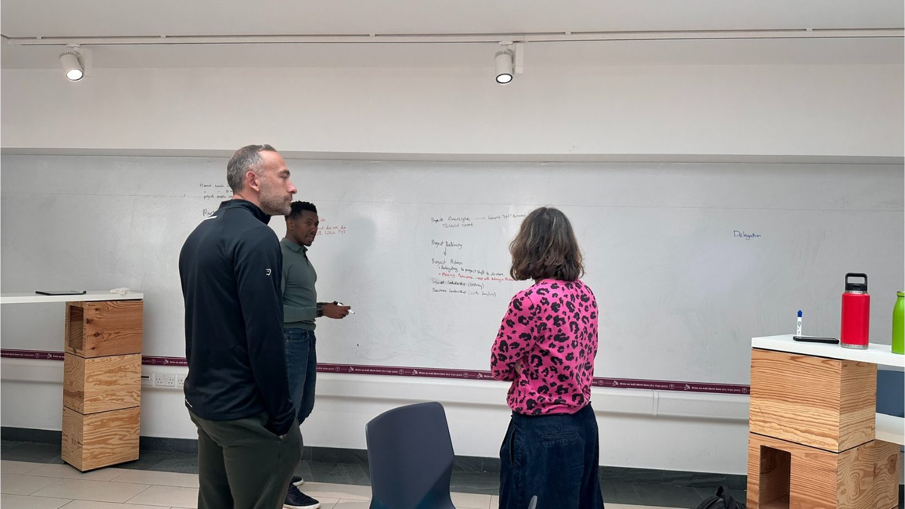

A feature for Founders, MDs, and Owners
BuildStrong.
For the leader who is also building the business. Where the strategic question and the operational reality are the same thing.
01 · The Problem
You’re running a business that exists because you built it. That’s not the problem.
The problem is that the business now needs you to be in the strategic seat and the operational seat and the founder seat, and there’s no time to sit in any of them properly.
You make decisions at speed because there’s no other speed available. You over-rotate on whichever fire is loudest. The thing you most need to think about, the long view, is the thing that’s hardest to actually look at.
That’s the gap BuildStrong is built around.

02 · The Work
A BuildStrong engagement runs differently from the corporate version because owners run differently.
Sessions happen when the business needs them, not on a quarterly calendar. The work moves between altitudes because the work of being an owner moves between altitudes. One week we’re working on the next ten-year question; the next we’re working on the hire that’s quietly breaking the team.
The session is the space where the founder-seat, the strategic-seat, and the operational-seat are all the same chair, and they get to talk to each other.
03 · The Lenses
Three frames the work moves through.
The owner altitude
Owners think differently from corporate leaders because owners are the business in a way corporate leaders aren’t. The session respects that.
The CliftonStrengths lens
A profile of how you actually operate. Used to make the business fit the founder, not the other way around. Most founders build companies that demand they be people they aren’t. We use the lens to stop that.
The FITT16 lens
A 16-archetype model built from your CliftonStrengths Full 34. It maps the drive underneath the strengths, so the business fits the founder, not just the operator.
In Their Words · From an owner who’s worked this way
“I just wish I’d met John years ago. The frameworks he uses would have saved me from expensive mistakes in two previous businesses.”
04 · One Thing Worth Knowing
Most founders are accidentally the bottleneck in their own business.
Not because they’re bad at it. Because the business needs them to be three people, and they’re trying to be three people in the same hour. The work is on what changes when only one of those people has to be in the room.
05 · The Invitation
The fastest way to know whether BuildStrong fits is to be at the board for an hour.
You’ll know whether the practice is for you. The hour is enough.
Book a Whiteboard SessionWondering what this looks like when the relationship deepens? Read about going further